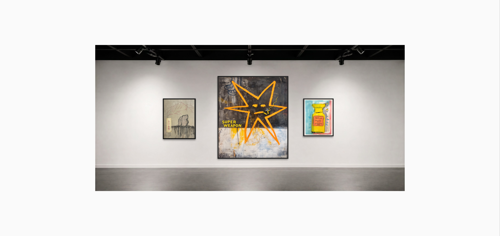
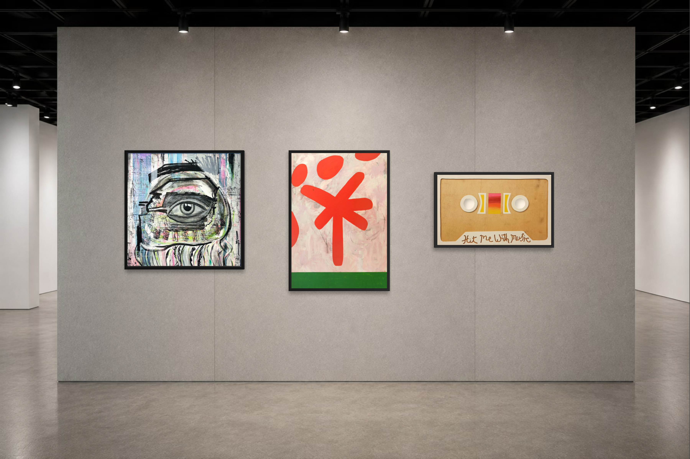

ABOUT KIN CONTEMPORARY
Contemporary art,
without boundaries.
Kin Contemporary is an Australian contemporary art gallery representing distinctive emerging and established artists from Australia and around the world.
Founded by artists and arts professionals, Kin Contemporary brings together original contemporary work through thoughtful curation, meaningful artist relationships and a personal approach to collecting.

OUR STORY
Built on collaboration, curiosity and a shared belief in artists.
Founded by Kelly Malkin and Federico Boni, Kin Contemporary grew from a shared belief that artists deserve thoughtful representation and collectors deserve a more personal way to discover contemporary art.
Bringing together experience across visual art, cultural partnerships, creative industries, our approach is centered on meaningful relationships, distinctive artistic voices and a new ways of connecting people with contemporary art.

FOUNDERS
Artist-led. Collector-focused.
CO-FOUNDER & DIRECTOR
Kelly Malkin
An arts and cultural professional with more than two decades of experience spanning contemporary art, strategic partnerships, cultural events and audience development. Kelly leads Kin contemprary's business and curatorial strategy, artist representation, partnerships and collector engagement.
CO-FOUNDER & CREATIVE DIRECTOR
Federico Boni
An Italian multidisciplinary artist working across contemporary art, design and visual storytelling. Federico brings an artist-led perspective to creative direction, exhibition design and artist development.

COLLECTING WITH KIN
Discover art that stays with you.
Whether you're acquiring your first artwork or building an established collection, Kin Contemporary offers a personal and informed approach to collecting.
From additional imagery and artwork details to certificates of authenticity, shipping and placement advice, we're here to make acquiring original art simple and considered.
Explore Available WorksARTIST SUBMISSIONS
Introduce your practice.
Kin Contemporary welcomes introductions from emerging and established artists whose work connects with our curatorial direction.
Submit Your Work